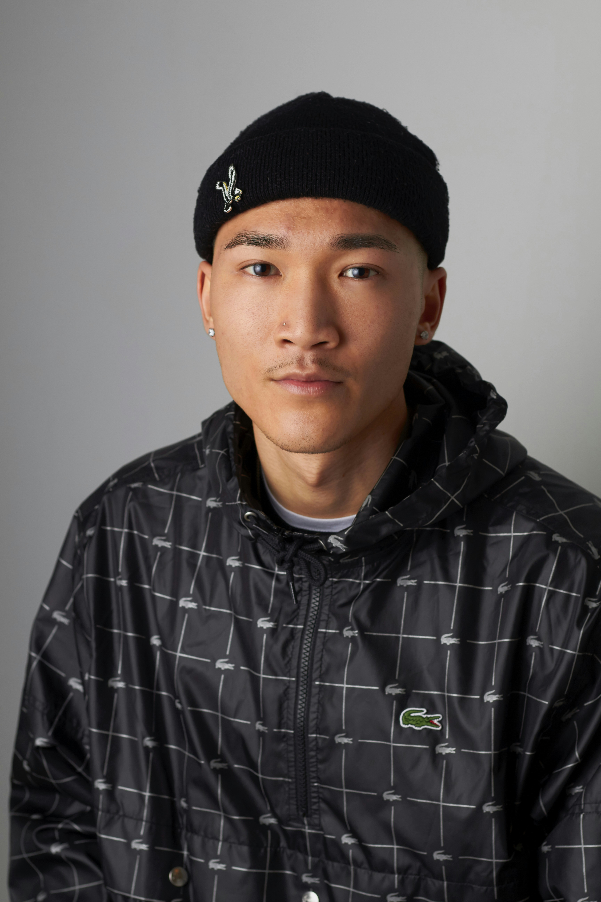

Meet the Minds Behind Coderspace
Each member brings unique energy, expertise, and creativity to the team. Together, we code, create, and connect to deliver exceptional digital experiences.
Coderspace is a digital community built to bring programmers together — enabling collaboration, knowledge sharing, and professional growth. It connects developers with other programmers in the tech space and with potential clients in need of reliable technical solutions. Beyond networking, Coderspace functions as a learning platform, offering curated mini-projects and resources to help upcoming programmers gain hands-on experience and confidently start their careers.

M. I. / Miriam Isles
Control Engineer | Developer | Visionary
Mooda is a passionate control engineer who thrives on integrating automation, coding, and creativity into real-world solutions. With a keen interest in robotics and AI, he’s always exploring how technology can solve everyday problems.
Hobbies: Building prototypes, exploring AI projects, sketching ideas, and gaming.
Goals: To lead innovative automation projects that simplify industries and inspire young developers.

A. K. / Alex Kravitz
Full Stack Developer | UI/UX Enthusiast
Alex combines strong backend logic with aesthetic front-end design. He loves turning ideas into smooth digital interfaces that make users feel at home from their first click.
Hobbies: Sketching UI layouts, gaming, and contributing to open-source projects.
Goals: To create inclusive and accessible software experiences that people genuinely enjoy using.

S. R. / Sara Ronan
Backend Architect | Data Specialist
Sara has a passion for structuring data, securing systems, and optimizing backend workflows. She ensures every line of code is robust, efficient, and scalable.
Hobbies: Data visualization, reading tech blogs, hiking, and photography.
Goals: To design backend systems that empower large-scale digital platforms.

J. L. / Jake Lannister
Mobile App Developer | DevOps Engineer
Jake bridges the gap between code and deployment, making sure every product runs smoothly across environments. He’s passionate about clean CI/CD pipelines and efficient mobile experiences.
Hobbies: Mobile UI design, cloud tinkering, and watching tech documentaries.
Goals: To lead DevOps teams that deliver seamless deployment automation globally.

E. M. / Epsilon Manson
Data Scientist | Machine Learning Expert
Emma dives deep into datasets to uncover insights that power business growth and innovation. Her curiosity and precision make her a cornerstone in Coderspace’s analytics work.
Hobbies: Data storytelling, Python scripting, and journaling about AI ethics.
Goals: To build machine learning systems that drive social impact and efficiency.